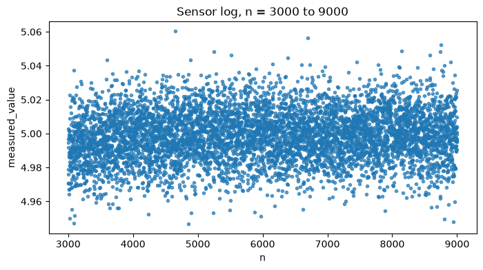
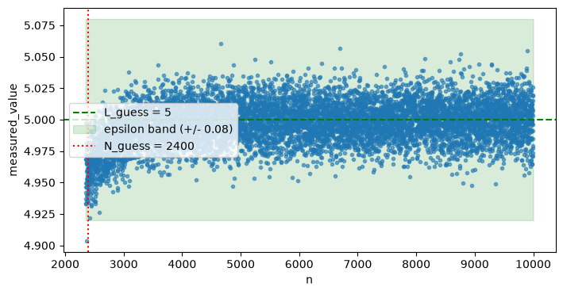
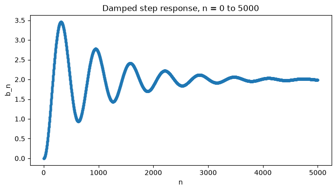
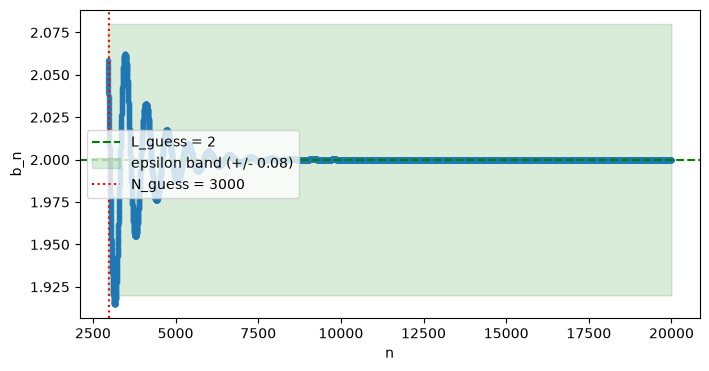
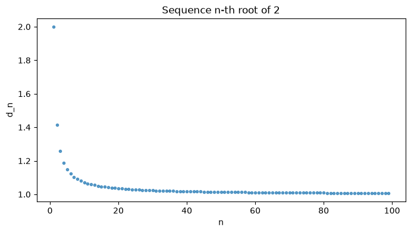

#
# !!! RUN THIS FIRST !!!
#
# (loads the data and defines all necessary functions)
#
import numpy as np
import pandas as pd
import matplotlib.pyplot as plt
pd.set_option('display.max_rows', 20) # long tables show head/tail with '...' automatically
df = pd.read_csv('data/rc_circuit_data.csv')
def a(n):
"""Return the n-th term of the sequence, a_n, as a plain float."""
row = df.loc[df['n'] == n]
if row.empty:
raise ValueError(f"n = {n} is out of range (data covers n = 0 .. {df['n'].max()}).")
return float(row['measured_value'].values[0])
def find_smallest_N(data, L_guess, epsilon, value_col='measured_value'):
"""Smallest N (present in the data) such that all later points are within epsilon of L_guess."""
vals = data[value_col].values
n_vals = data['n'].values
for i in range(len(vals)):
if np.all(np.abs(vals[i:] - L_guess) < epsilon):
return int(n_vals[i])
return None
def check_convergence(data, L_guess, N_guess, epsilon, value_col='measured_value', reveal_threshold=50):
vals = data[value_col].values
n_vals = data['n'].values
mask = n_vals >= N_guess
if not mask.any():
print(f"N_guess = {N_guess} is beyond the range of available data (max n = {n_vals.max()}).")
return False
tail_n = n_vals[mask]
tail_vals = vals[mask]
bad = np.abs(tail_vals - L_guess) >= epsilon
if bad.any():
first_bad_n = tail_n[bad][0]
print(f"✗ Not valid: at n = {first_bad_n}, |a_n - {L_guess}| >= {epsilon}.")
print(" The sequence leaves the epsilon-band after your N_guess. Try a larger N, "
"or reconsider your L_guess.")
return False
print(f"✓ Valid: for all n >= {N_guess}, |a_n - {L_guess}| < {epsilon}.")
# Don't just hand over the smallest N -- only reveal it once the guess is close.
best_N = find_smallest_N(data, L_guess, epsilon, value_col)
if best_N is not None:
gap = N_guess - best_N
if gap == 0:
print(" This is also the smallest N that works for this L_guess.")
elif gap <= reveal_threshold:
print(f" Close! The smallest N that works is N = {best_N} (you were only {gap} away).")
else:
print(" This N works, but it's probably not the smallest one -- "
"try a smaller N and see if it still holds.")
return True
def plot_challenge(data, L_guess, N_guess=None, epsilon=None, value_col='measured_value',
zoom=True, buffer=50):
"""
Plot the sequence with the guessed L (and epsilon band, and N_guess) marked.
By default (zoom=True), the plot starts `buffer` samples before N_guess and
runs to the end of the data -- enough to see whether the sequence was
outside the band right before N_guess, and to see it stay inside the band
all the way to the end. Set zoom=False to see the whole sequence instead,
or pass a bigger `buffer` to look further back.
"""
plot_data = data
if zoom and N_guess is not None:
start = max(int(data['n'].min()), N_guess - buffer)
mask = data['n'] >= start
plot_data = data[mask]
plt.figure(figsize=(8, 4))
plt.plot(plot_data['n'], plot_data[value_col], '.', alpha=0.6)
plt.axhline(L_guess, color='green', linestyle='--', label=f'L_guess = {L_guess}')
if epsilon is not None:
plt.fill_between(plot_data['n'], L_guess - epsilon, L_guess + epsilon,
color='green', alpha=0.15, label=f'epsilon band (+/- {epsilon})')
if N_guess is not None:
plt.axvline(N_guess, color='red', linestyle=':', label=f'N_guess = {N_guess}')
plt.xlabel('n')
plt.ylabel(value_col)
plt.legend()
plt.show()9 Convergence of Sequences: Reading Data
You’ve been handed a log file, data/rc_circuit_data.csv, from a lab sensor. It records a voltage measurement measured_value at each sample index n (and the corresponding time t_seconds).
You do not know what circuit or process produced this data. Your job is to:
- Explore the data and form a hypothesis about its limiting behavior.
- Given a challenge value \(\varepsilon\), guess the limit \(L\) and the index \(N\) after which the data stays within \(\varepsilon\) of \(L\) — then verify your guess rigorously, not just by eye.
Recall the definition:
\[ \lim_{n\to\infty} a_n = L \iff \text{ for all } \varepsilon>0,\ \text{ there is } N \text{ s.t. } n\ge N \implies |a_n-L|<\varepsilon. \]
9.1 A Simple Query Function
Sometimes you just want a single term of the sequence, \(a_n\), without pulling up the whole table. a(n) does that.
# try it:
a(0), a(5000), a(9999)(0.0, 5.0165, 4.9733)9.2 Task 1: Explore the Data
The full log has 10,000 samples. Set n_start and n_end below to pick a window and re-run the cell to see the table and plot over just that range — e.g. zoom into the early samples to see the initial behavior, or into the tail to see whether it’s still moving. Change the numbers and re-run as many times as you like.
# EDIT HERE
n_start = 3000
n_end = 9000
#
# No need to change anything down here
#
view = df[(df['n'] >= n_start) & (df['n'] <= n_end)]
display(view)
plt.figure(figsize=(8, 4))
plt.plot(view['n'], view['measured_value'], '.', alpha=0.7)
plt.xlabel('n')
plt.ylabel('measured_value')
plt.title(f'Sensor log, n = {n_start} to {n_end}')
plt.show()| n | t_seconds | measured_value | |
|---|---|---|---|
| 3000 | 3000 | 0.3000 | 4.9917 |
| 3001 | 3001 | 0.3001 | 4.9966 |
| 3002 | 3002 | 0.3002 | 4.9946 |
| 3003 | 3003 | 0.3003 | 4.9709 |
| 3004 | 3004 | 0.3004 | 5.0027 |
| ... | ... | ... | ... |
| 8996 | 8996 | 0.8996 | 5.0257 |
| 8997 | 8997 | 0.8997 | 4.9995 |
| 8998 | 8998 | 0.8998 | 4.9907 |
| 8999 | 8999 | 0.8999 | 4.9952 |
| 9000 | 9000 | 0.9000 | 5.0096 |
6001 rows × 3 columns

Questions to answer before moving on
- What value does the sequence appear to be approaching? Write down your best guess for \(L\).
- Roughly how many samples does it take before the data “settles down” near that value?
- Does the data ever exceed your guessed \(L\), or only approach it from below?
- Try
a(n)for a few largen(e.g. 7000, 8500, 9999) — does it match what the plot suggested?
9.3 Task 2: The \(\varepsilon\) Challenge
Your instructor assigns a value of \(\varepsilon\). Using only the data (no formulas, no ground truth), you must:
- State your guessed limit
L_guess. - State the smallest index
N_guessyou believe works. - Check your answer with
check_convergencebelow, which verifies directly against the definition: it checks whether every remaining data point fromN_guessonward is withinepsilonof yourL_guess.
Note this checks self-consistency with your own guessed \(L\) — it does not tell you the “true” limit, because the whole point is that you don’t get to see that. Two different reasonable guesses for \(L\) can each have a valid \(N\).
The checker also won’t just hand you the smallest possible \(N\): if your guess is close (within 50), it’ll tell you the exact smallest \(N\); if you’re further off, it’ll just tell you to try smaller.
plot_challenge zooms in by default: it starts a bit before your N_guess and runs to the end of the data, so you can see both whether the sequence was outside the band just before N_guess and that it stays inside all the way to the end. Pass zoom=False if you want to see the whole sequence instead.
# --- Your answer ---
EPSILON = 0.08 # <- instructor-assigned challenge value
L_guess = 5 # TODO: your guessed limit
N_guess = 2400 # TODO: your guessed N
check_convergence(df, L_guess, N_guess, EPSILON)
plot_challenge(df, L_guess, N_guess, EPSILON)✓ Valid: for all n >= 2400, |a_n - 5| < 0.08.
Close! The smallest N that works is N = 2361 (you were only 39 away).
9.4 Dataset 2: Damped Oscillator
This time there’s no CSV and no noise. Instead, you’re given the sequence directly as a function you can call for any index n — exactly the way a sequence \((b_n)\) is usually presented in a calculus course. It models the position of an underdamped mechanical system (e.g. a suspension, a sensor needle) responding to a step input:
\[ b_n = x_{ss}\left(1 - e^{-\zeta \omega_n t_n}\left(\cos(\omega_d t_n) + \frac{\zeta}{\sqrt{1-\zeta^2}}\sin(\omega_d t_n)\right)\right), \qquad t_n = n \cdot dt \]
with \(\omega_d = \omega_n\sqrt{1-\zeta^2}\). Unlike Dataset 1, this sequence oscillates around its limit before settling — so “getting close once” is not enough; you have to check it stays close.
Since it’s an exact formula (not a fixed table), you can evaluate it at any n you like, no matter how large — there’s no upper limit like there was with a(n).
x_ss = 2.0 # steady-state value
zeta = 0.1 # damping ratio
wn = 10.0 # natural frequency (rad/s)
wd = wn * np.sqrt(1 - zeta**2)
dt2 = 0.001 # seconds per sample
def b(n):
"""Return the n-th term of the damped step-response sequence, b_n, as a
plain float (or array of floats if n is array-like). No noise: this is
the exact closed-form value."""
scalar_input = np.ndim(n) == 0
t = np.atleast_1d(np.asarray(n, dtype=float)) * dt2
vals = x_ss * (1 - np.exp(-zeta * wn * t) *
(np.cos(wd * t) + (zeta / np.sqrt(1 - zeta**2)) * np.sin(wd * t)))
return float(vals[0]) if scalar_input else vals
# try it -- note n can be far larger than anything in Dataset 1's table:
b(0), b(3000), b(1_000_000)(0.0, 2.0095601007352615, 2.0)9.5 Task 3: Explore the Sequence
Same idea as Task 1: set n_start and n_end and re-run to see a table and plot of \(b_n\) over that window. Try zooming into the first couple thousand terms to see the oscillation, then look further out to see it settle.
n_start = 0
n_end = 5000
n_vals = np.arange(n_start, n_end + 1)
view2 = pd.DataFrame({'n': n_vals, 'b_n': b(n_vals)})
display(view2)
plt.figure(figsize=(8, 4))
plt.plot(view2['n'], view2['b_n'], '.', alpha=0.7)
plt.xlabel('n')
plt.ylabel('b_n')
plt.title(f'Damped step response, n = {n_start} to {n_end}')
plt.show()| n | b_n | |
|---|---|---|
| 0 | 0 | 0.000000 |
| 1 | 1 | 0.000100 |
| 2 | 2 | 0.000399 |
| 3 | 3 | 0.000898 |
| 4 | 4 | 0.001596 |
| ... | ... | ... |
| 4996 | 4996 | 1.989225 |
| 4997 | 4997 | 1.989154 |
| 4998 | 4998 | 1.989084 |
| 4999 | 4999 | 1.989015 |
| 5000 | 5000 | 1.988948 |
5001 rows × 2 columns

Questions to answer before moving on
- What value does \(b_n\) appear to be converging to? Compare to your guess for Dataset 1 — how did you decide this time, given there’s no noise to average out?
- Around how many terms does it take before the oscillation dies down to something you’d call “close” to the limit?
- Pick an
nwhere the plot looks close to the limit, then check a latern— does it ever swing back out? Why might that matter for choosingN?
9.6 Task 4: The \(\varepsilon\) Challenge, Again
Same process as Task 2 — guess L_guess and N_guess for a given epsilon, and check them. The check_convergence, find_smallest_N, and plot_challenge functions from Task 2 work unchanged here; we just need a table of \(b_n\) values to check against. Since \(b_n\) is exact (no noise), we can build that table out to a very large n — far past where anything interesting happens — so the check is effectively verifying “forever.”
n_check = np.arange(0, 20000) # generous horizon -- well past where b_n settles
osc_df = pd.DataFrame({'n': n_check, 'b_n': b(n_check)})
# --- Your answer ---
EPSILON2 = 0.08 # <- instructor-assigned challenge value
L_guess2 = 2 # TODO: your guessed limit
N_guess2 = 3000 # TODO: your guessed N
check_convergence(osc_df, L_guess2, N_guess2, EPSILON2, value_col='b_n')
plot_challenge(osc_df, L_guess2, N_guess2, EPSILON2, value_col='b_n')✗ Not valid: at n = 3124, |a_n - 2| >= 0.08.
The sequence leaves the epsilon-band after your N_guess. Try a larger N, or reconsider your L_guess.
9.7 Task 5: Convergence of \(\sqrt[n]{p}\)
Finally, we want to study the convergence behavior of \(d_n = \sqrt[n]{p}\) for various \(p\). Set the parameters in the cell below.
# Set p
p = 2 # Experiment with different p
# Set the range of n you want to consider
d_start = 1
d_end = 100
def d(n):
return float(p**(1/n))As above, to return just a single term of the sequence, use d(n):
d(2)1.4142135623730951Now let’s plot the sequence:
d_array = np.arange(d_start, d_end)
d_vals = p**(1/d_array)
view3 = pd.DataFrame({'n': d_array, 'd_n': d_vals})
# display(view3)
plt.figure(figsize=(8, 4))
plt.plot(view3['n'], view3['d_n'], '.', alpha=0.7)
plt.xlabel('n')
plt.ylabel('d_n')
plt.title(f'Sequence n-th root of {p}')
plt.show()
Questions: - Does this sequence converge for all \(p>0\)? - If so, does the limit depend on \(p\)?